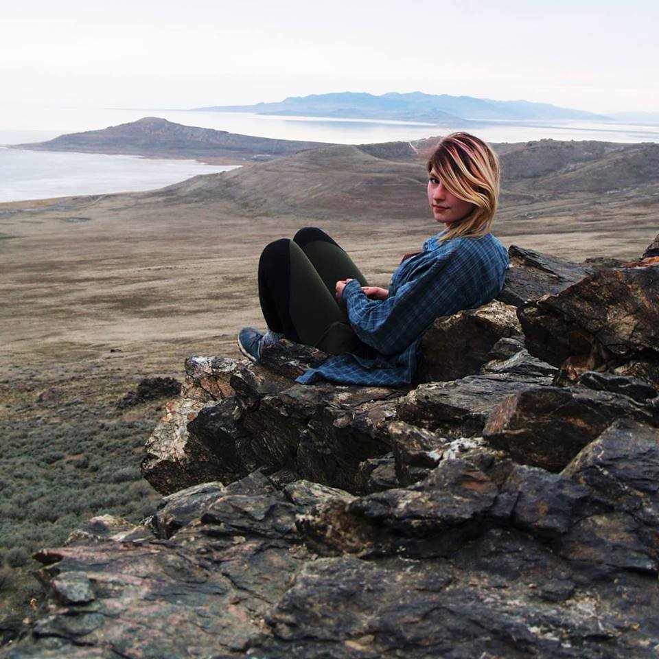

About Me

Hello, I'm Emily, and I have been living in Utah
for three years now. I was born and raised in South-Eastern Michigan
and continue to visit often. Growing up surrounded by water,
I fell in love with swimming, boating, and visiting the beach.
In Utah, water is scarce. Good thing I find beauty in nature as a whole.
Since moving to Utah, I have explored the mountains surrounding
Salt lake City, down to the deserts of southern Utah. I love to
explore and experience new things. I have learned to rock climb, rappel,
backpack, and many wilderness survival skills since moving to Utah.
I moved to Utah seeking adventure, independance, and work at a wilderness,
adventure, therapy company named, Aspiro. I have worked in psych for many
years and appreciate the care I can provide, along with the challenges it provides.
Being a person who loves a challenge, I decided to explore the world of
coding. I am currently
enrolled in the Coding Bootcamp through the University of Utah.
This new path of learning has given me excitement for my future
with anticiation of where I will go. With this new career path
I plan to join the family business as a full-stack developer. My
family started their own computer company from the ground up, which
has taught me that with perserverance and hard work I can accomplish
anything I want to in life. I am excited to say this is the beginning
of a new chapter.